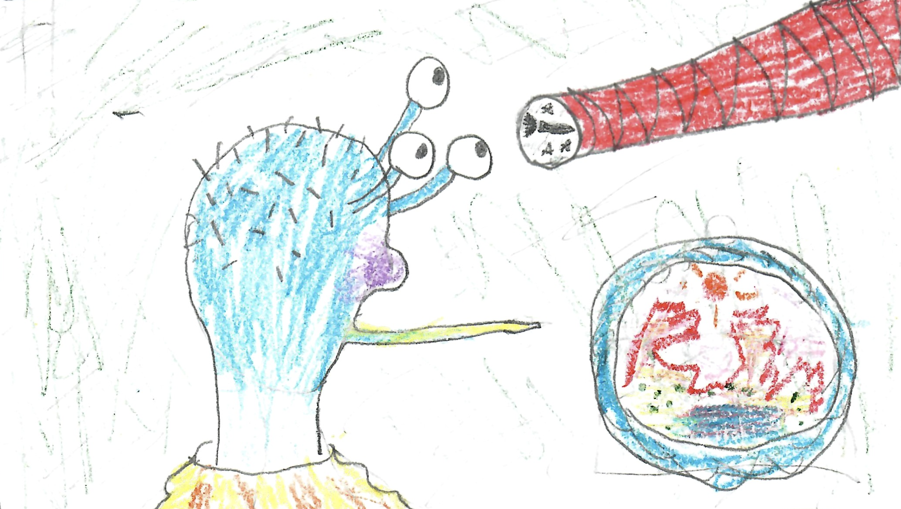

Hand drawn image of Megonto-73-X seeing the spaceship through his telescope (2016)
Pronunciation guide:
Berbob = ˈbɝːˌbɑb
Berćuse = ˈbɝːkjus
BüoĞ = ˈbwɑɡ
Cognole = ˈkɑɡnʌl
colBüĞ = ˌkʌlˈbwɑɡ
Eduóra = ˌiˈdwɔrə
Derell = ˈdɛrəl
Gergnus = ˈɡɝːɡnʌs
Megonto = miˈɡɑnˌtoʊ
Reshpeckobiggle = ˌrɛʃˈpɛkoʊˌbɪɡəl
semihyperwarp = ˌsɛmiˈhaɪpərˌwɔrp
subron = ˈsʌbrɑn
Visenus = vɪˈzinəs
Wampash = ˈwɒmpæʃ
Whüngopam = ˈʍuːŋɡoʊˌpæm
Megonto-73-X stared out the window of his office, his long spindly mouth wheezing on consternation. He looked out towards the heavens and frowned ominously. On the door of the spherical room that he stood in, a knock was heard. In entered Visenus-9-E, Vice president of the affairs of public Safety. His face was consternated in wonder, and he gasped as if in amazement.
"President!" he shouted, not through vulgar speech of course, but through a much more refined form of brain waves used by every Cognole on the planet of Gergnus, "What have you to say now? Every day they get closer and closer, and I fear that our whole civilization is at risk. They get closer and closer every day, and they refuse to conform to any of our thought waves. They resist every known form of communication. Who are they? What do they want? Every day new facts come to our attention, that frighten us to our very back of the three eyes on our heads! Did you know that they have managed to tame the atom, but are strangely oblivious to hyperwarp theory? They use their power very wastefully, and at the rate they are coming they will reach us in 30 years!"
(A year on Gergnus is roughly equivalent to one week on earth, and contained 5.4 revolutions of their planet.) "I think that we shall have to wait until they come, and examine them to see if we can gain anything in the way of communication to them. I only hope they do not wish to come in war; that would prove them to be barbarians indeed. War was successfully banished from our planet 3 million years ago. However, nothing will stop squabbles in between individuals, although they gain nothing by it. I always believed that there were other intelligences in the galaxy, but I had no proof until recently. I predict others too, in varying stages of civilization. I am quite exited to see them come."
"Quite right, Megonto-73-X; but I am not sure that they are safe. Perhaps it would be better if they were examined by less important people, so you can carry on your work in the sciences in case they are dangerous."
"I cannot believe that they can be very dangerous. And besides; selfishness is a barbarian and uncivilized notion. Do not worry. I think they are perfectly harmless."
"You cannot base a truth off of guessing."
"Sure, but the deduction of similarities between already known truths will yield much to the study of the abstract." "On another subject, sir,-"
"You needn't call me sir. One man is not better than another but through the merits of his goodness and virtues, and arbitrary callings have no real meaning."
"You are an exemplary Quaker. On another subject, I would like to tell you of the news that we have received. A sign of intelligence and a sign of a lack of intelligence from the foreign creatures in the ship that is heading towards our planet."
"And what are these signs?"
"When the ship realized that our planet was inhabited, it sent out a metal plate with engravings on it at high speed towards our planet. It landed in a field only yesterday evening. The ship, going at nearly the speed of light, had sent out a projectile going about twice the speed of the ship and thus twice the speed of light. Thus they have knowledge of semihyperwarp."
"Than why don't they send their ship though on the semihyperwarp plane also?"
"I do not know. Perhaps they are afraid of going too fast. In semihyperwarp, light from the surrounding stars would become invisible, and only higher forms of wavelengths could be detected. Perhaps they are not used to that form of navigation, or perhaps it is new and they are afraid of accidentally annihilating themselves, which our early scientists also thought, until they realized the fact that matter always exists and its lack of presence on one plane only means that it is only on another plane of existence. That is of course the one unbreakable rule of science; that nothing can be annihilated." "Go on, Visenus-9-E."
"The disturbing lack of intelligence in these creatures is their shocking and barbarianish lack of modesty. On the plate, which scientists are still trying to decipher, is a picture of both the male and female forms of life on their planet. The scientists were scandalized. They lacked clothes!"
"Goodness!'
"Of course the scientists drew clothes on the figures, but this brings to attention another problem. Will these beings wear clothes when they land on this planet? If not, it may be necessary to clothe them. This is a surprising lack of intelligence in creatures advanced enough to make ships to explore space. I don't understand it."
"I think," said President Megonto-73-X, "That the problem is much different and you are quite wrong. Why would we send out pictures like that?"
"You do have a point. I never thought of it that way. They must be destitute and nearly starving."
"And fleeing too, from hostile enemies. Perhaps they are refugees, and are being chased or have been driven out of their planet. They probably are wearing rags and dying of thirst. This is their last hope, to land on this planet. That is one of the only reasons that thought communication does not work correctly in our own species: intense fear and intense anger. Since there is no even faintly logical reason that they would be angry at us, they must be dreadfully afraid. As soon as they land, they will need to be assisted as soon as possible." He dialed the direct number to the world leader of Cognole; Wampash-87-C.
"Request from Megonto-73-X, President of the affairs of Public safety! These aliens are definitely refugees! Organize a large scale relief effort immediately."
Several days passed, and Megonto-73-X donated a large sum towards the refugee effort. A stockpile of supplies was built, and the Cognoles of course remembered to include clothes. The Cognoles had calculated the landing spot of the visiting spaceship to the nearest 2 BüoĞs (which is the equivalent of about 5.2 earth miles. By the way, one BüoĞ was was the same as eleven point two colBüĞes. Don't ask me why they measured this way.) and had a building put up for the refugees. They realized that they had to assume nothing. They had a full chemical laboratory in there. What if the visitors could not survive at the temperature of the planet Gergnus? What if they had to breathe something different than the atmosphere of Gergnus? Somehow I know that if real aliens were visiting earth they would not receive such kind treatment or consideration, even if they had been invited here.
By now all the news only spoke about the visitors, and everybody was talking about them. The most farfetched ideas were thought of, and even suggested that the spaceship was a meteorite. Others said that the spaceship was a mistake and never had existed.
"If it was a true spaceship piloted by actual beings, it would have been able to communicate with us." They reasoned. Some were terrified and evacuated the area. But much more than they came to the small town of Derek where it was expected to land. As the spaceship came closer and closer the calculations of where it would land grew more and more precise, and the day before it was expected to land a soft landing pad was put down for the spaceship to land on. The town population had literally multiplied a hundred fold; and where there was once 500 there was now half a million, camping in the hills and countryside all about. At least for now only three eminent scientists, and about thirty hired chemists along with many helpers would be allowed to meet the refugees, but the sight of the spaceship landing would be quite a sight to see by itself.
The night before the landing, a new dot of light could be seen in the bright sky. The spaceship had long before began its long sequence of deceleration. Cognoles sat and watched the night sky, waiting...
Megonto-73-X went to bed early that night. He was one of the three eminent scientists selected to meet the aliens. (The other two, by the way, were Fárnius-8-G and Sesaphim-9-Z IV)
The next morning a large crowd of Cognoles surrounded the platform. Because of the light of the sun, the spaceship could not be seen; until suddenly, billowing like a great spot of light growing larger every second, the spaceship, heavily firing retro-rockets to help with the deceleration descended from the sky and landed straight in the middle of the platform. When the smoke cleared, Megonto-7 walked up to the spaceship with the two other scientists. An airlock opened and two enormous ugly white insects almost the size of a Cognole emerged! They had a huge eye that nearly covered the front of their head, and four tentacles. The crowd screamed. The insects ran back to the airlock and huddled against it, banging on the walls. The sound of an engine was heard and the spaceship seemed to cough and then it fell sideways, rolling across the platform. Cognoles scattered as it gradually rolled to the edge. Then it fell off the platform and onto the ground. Both of the insects, who were still on the platform, collapsed and fell to the ground. They were apparently dying. The scientists grabbed the insects and rushed them to the huge chemistry building on the side of the platform and disappeared into the building.
The crowd went wild. Screams of terror and also of disgust at the ugliness of the insects were heard. Many in the crowd dispersed and went back home immediately to tell their relatives this horrific story, but still more stayed to see what would happen next. A good amount of them crowded about the spaceship to see if it was alive. Some tried to open the doors, but they would not open. Finally, most of them left. But a few stayed around, staring at the gleaming metal object and taking pictures of it. Only a few were left when the doors started to open again. The white tentacled grubs emerged again. This time there were five, and they carried big black ugly guns. There were five loud cracks, and bullets whizzed thought the air at the Cognoles. Three of the Cognoles fell dead and one seriously injured. The Cognoles fled and soon the area was deserted. The five grubs began to trudge onward...
The night before the landing, a new dot of light could be seen in the bright sky. The spaceship had long before began its long sequence of deceleration. Cognoles sat and watched the night sky, waiting...
Megonto-73-X went to bed early that night. He was one of the three eminent scientists selected to meet the aliens. (The other two, by the way, were Fárnius-8-G and Sesaphim-9-Z IV)
The next morning a large crowd of Cognoles surrounded the platform. Because of the light of the sun, the spaceship could not be seen; until suddenly, billowing like a great spot of light growing larger every second, the spaceship, heavily firing retro-rockets to help with the deceleration descended from the sky and landed straight in the middle of the platform. When the smoke cleared, Megonto-7 walked up to the spaceship with the two other scientists. An airlock opened and two enormous ugly white insects almost the size of a Cognole emerged! They had a huge eye that nearly covered the front of their head, and four tentacles. The crowd screamed. The insects ran back to the airlock and huddled against it, banging on the walls. The sound of an engine was heard and the spaceship seemed to cough and then it fell sideways, rolling across the platform. Cognoles scattered as it gradually rolled to the edge. Then it fell off the platform and onto the ground. Both of the insects, who were still on the platform, collapsed and fell to the ground. They were apparently dying. The scientists grabbed the insects and rushed them to the huge chemistry building on the side of the platform and disappeared into the building.
The crowd went wild. Screams of terror and also of disgust at the ugliness of the insects were heard. Many in the crowd dispersed and went back home immediately to tell their relatives this horrific story, but still more stayed to see what would happen next. A good amount of them crowded about the spaceship to see if it was alive. Some tried to open the doors, but they would not open. Finally, most of them left. But a few stayed around, staring at the gleaming metal object and taking pictures of it. Only a few were left when the doors started to open again. The white tentacled grubs emerged again. This time there were five, and they carried big black ugly guns. There were five loud cracks, and bullets whizzed thought the air at the Cognoles. Three of the Cognoles fell dead and one seriously injured. The Cognoles fled and soon the area was deserted. The five grubs began to trudge onward...
Meanwhile, Megonto-73-X, unaware of the grub's duty to conquer the world, set about to finding the right temperature and combination of gases that these two unconscious grubs would need. He used a thermo-spectroscope to analyze the core temperature of the grubs (without actually subjecting the grubs to any adverse temperatures) with thermo-spectroscopy, and the result was at once obvious and shocking. The grubs core temperature was 350 degrees colder than the normal daytime temperature on Gergnus and 304 degrees colder than the coldest temperature ever recorded on Gergnus. (the grubs obviously had clothes on, it was realized, or else they would be dead in the temperatures which were so adverse to their habitat; in fact, they had on an entire cold-retaining shell.) They had to be placed in the coldest freezer that the Cognoles could find, and even then they had to lower the temperature in the freezer a frightening amount. The grubs were found to breathe a gas that did not exist on Gergnus except in rocks, oxygen. They were amazingly uncoöperative and once one of them lifted off it's helmet and began to speak absolute gibberish. The one eye had been part of the helmet and the Cognoles now saw that it had 2 eyes and was not quite as hideous as before, but still very unnatural and ugly. It made odd sounds in its mouth and yelled out long sequences of Absolute Gibberish. It seemed to have very little intelligence and was very interested in showing off by its fingers that one plus one equals two and two plus two equals four. The Cognoles were not impressed. News reached them of the other grubs and how they had killed several Cognoles. Megonto-73-X said one day in despair: "We were all prepared to assist them, and we were all eager to teach them our knowledge or be eager pupils if they were more intelligent than us. However, we no see that any knowledge we gave to the brutes they would use against us to destroy us." The grubs, however, were obviously starving to death. What I will tell next is one of the most unfortunate things that the Cognoles did to the grubs, but it was meant to help them, not hurt them. One of the younger chemists decided to try to feed the Cognoles, who would obviously die without food. No one else was in the room at the moment, as most of the scientists were trying to debate what to do with the Cognoles. This chemist, who was named Eduóra-99-L, went out and spent a tidy sum of money on a beloved delicacy of the Cognoles. The White Grubs had strangely acted very hostile, and Eduóra-99-L gave the food to the grubs in an attempt to get the grubs to realize that the Cognoles meant to be friendly. It was very pure Mercury topped with Ammonia and Arsenic. Eduóra, using brain waves, tried to tell the White Grubs that it was food, but they would not listen to him. They refused to even try to understand him and resisted his brain waves with a zeal that shocked even Eduóra-99-L. In frustration, he showed them his own lunch (concentrated bleach mixed with ammonia) and ate it, bit by bit. He then pointed to his food and then to his mouth and then to them. They refused to understand. In fact, they seemed to watch him with their one large ovoid eye as if waiting for him to explode. When he had eaten his lunch, he left in exasperation. But the damage was done.The fumes from the ammonia and other chemical seeped into the atmosphere of oxygen and eventually poisoned the grubs. When Megonto-73-X came back from the meeting, the grubs were dead. He never found out why, as Eduóra-99-L was afraid to tell. When he found that the food had killed the aliens, he gave up chemistry and started an elite catering business. In his own reasoning, "I can't cook for aliens. They refuse to be satisfied with good food. I will cook good old Ammonia, Arsenic, Bleach, and all the others for normal people who can actually eat normal food. "He also became well-respected for making the best radioactive desserts in the subron of Reshpeckobiggle. We will now leave him and the chemists and go back to where the other grubs were, shooting their way through town and killing any Cognole that got in their way; men, women, and children, without discrimination.
Whüngopam-H8-9 looked out of the window of her house and over the neighborhood of Derek below her. Her house was on the foothills of Mt. Lazurus and so she could look out on the countryside. Near the town was the beautiful Lake Berbob, made of molten Gallium and other delicious chemicals. The lake was so dense that you could almost walk on it, and some small children could. The town was situated in the Berćuse mountain range and the cinnamon-red mountains were all about. There were many hot springs and even a considerable number of active volcanoes in the area, but not all of Gergnus was like this. There were oceans and forests utterly alien to the forests of earth, forests of flowers that towered thousands of feet into the air and could support a small town, and yet were intensely beautiful with infinite numbers of ravishing patters. Each petal (and there were thousands, in a plethora of shapes and sizes) was fit to make a Persian carpet a mere coördinate in a commonplace graph. The beautiful orange, green, purple, and even rainbow oceans, the fields of light blue grass the size of trees, all combined with a million other things that would take volumes to tell of beauty utterly separate from anything on Earth. If you have not seen it, you do not understand.
The meditations of Whüngopam-H8-9 were disturbed by a shot coming from unknown sources. At first she could not imagine what the loud sound was, but then she remembered how she had learnt in school about the faraway times millions of years ago when war had been abolished, and people killed each other with loud exploding machines. A horrid thought struck her that perhaps there was war again, but she knew it was impossible. Why would there be one Cognole who would trade the almost everlasting peace with sorrow? The sound was heard again. Whüngopam-H8-9 floated down the stairs to the door. The sight that caught her eyes was one of horror. A white grub with a large ugly black object in its hands was shooting at other Cognoles. Any that it shot at, fell dead. Whüngopam-H8-9 knew exactly what she had to do. She hated to hurt any living thing, but this thing was evil and she must protect her children, who were in the house. The thing might soon come up here and go in there! She got a metal bucket and ran some way up the mountain; a few hundred feet or so. When she arrived at one of the small volcanic caldrons half a mile up, she leaned over the edge of one of them and dipped her heat-sealing bucket in the lava and pressed the lever that closed the lid. Then she floated down the mountain as fast as she could. She arrived at her house to find the white grubs at the same place it was before, several houses down on the mountain. They were all trying to hack their way into one of the houses and some were shooting at the house. They did not notice Whüngopam-H8-9 coming towards them. She had attained a great velocity by floating down the mountain, and was going about the equivalent of what on earth was about 30 miles an hour. Then she did a very brave thing. She levered the lid open, and in one wild swing, threw the bucket up into the air. The white grubs heard a great whizzing noise, and saw, to their horror, softball sized globs of glowing red hot lava falling down upon them. There was no time to run. The last thing they saw was Whüngopam-H8-9 shooting by at what was now the equivalent of 50 earth miles an hour, out of reach of the lava. It fell on all of them, as they were all huddled together, and as it hit them they exploded.
And so thus was Derek saved.
Whüngopam-H8-9 slid to a stop in the middle of the road at the bottom of the mountain to be nearly deafened by the cheers of joy. The Cognoles, nearly frightened to death of the evil invaders, could not contain themselves by mere mental communication and literally shouted for joy. Several days later word leaked out that the aliens in the laboratory had died of unknown causes. The spaceship was put in a museum, and its contents analyzed. In the spaceship there was a considerable number of notes, made up of Absolute Gibberish. They were put under a glass case in a museum. Megonto-73-X speculated that they could have meaning, but none of the Cognoles were ever able to decipher any of the Absolute Gibberish, and soon the official name for the aliens tongue was Absolute Gibberish.
In Derek there now stands a plaque where the rocket landed, briefly explaining the incidents that happened there (In fact, Derek is now known as the "town of the invaders", a title they hold proudly) and there also stands a statue of Whüngopam-H8-9 floating down the mountain with the bucket of lava in her hands, about to throw. The incident has progressed to urban legend and some Cognoles falsely say that "I saw the invaders."
Megonto-73-X suffered some mild ridicule at the hands of the press (the Cognoles, of course, although they had telepathy, also had a written language to store knowledge, and along with this naturally came newspapers and books, ect.) for his refugee effort. He went on to invent many wonderful things and was a great scientist, (although he was discouraged from astronomy for a time because of the invaders), and he even had the 134'st element (according to the periodic table by the written language of the Cognoles) named after him, however, the question he was asked most often was "Can you tell me about the invaders?"
Four years later, after traveling at the speed of light though space, the final radio messages from the spaceship reached earth. These radio messages were received and pored over in horror by many people, and prompted a new wave of science fiction novels about evil, ruthless aliens without any feelings. These are exerts from the final ones:
Nov. 5, 2456 A.D. Today the first planet of Alpha Centauri was sighted. We will land in three days. When you get this message we will be nearly back to earth. Odd sensations were felt, as if some evil intelligence was trying to gain hold of our minds. I held out, not reavealing one thought, and I could see beads of presperation on the forhead of Everett, our engineer. What are these ghastly presences? What are these alien thoughts trying to impress themselves on our minds. I have no doubt but that it is evil, and trying to gain dominion over our minds, and render us useless beasts, and worthless animals.
Nov. 6. We are closer now, and feel the presence more strongly every day. It is a nightmere. How can I hold out these evil thoughts trying to gain dominion over my mind?
Nov. 7. The thougts have stopped. Tommarow we will land. For over five hundred years mankind has dreamed of travel outside of our solar system, but we are the first. What ponderous thoughts! The dreams of science fiction, once thought impossible, are now coming true.
Nov. 8. We have landed. What a lot has happened! I have hardly enough time to write! These aliens are unbelivably evil. I do not know how to begin to tell how-
Nov. 8 Later. I had better begin over again. Today we landed. Crimson and Derell got in their spacesuits. Has it never occurred to anyone that a man in a spacesit looks like a large white grub? With tentacles? And one large oviod eye, as the face is covered with a transparent cover? Anyhow, these people, as I was saying, got in their spacesuits and went out through the air lock. But what horror! They had completely anticipated our coming! The two men stepped out, and all that the antannea would communicate to us was their shreiks as they came near us. They fainted with horror wholly beyond earthly expeiriance, and we tried to blast off into space again and save ourselves and warn the earth with our horrible news. But the pad that we had come down on was like rubber, and we bounced and fell over and then the most horrible imaginable thing happened! I saw them, those evil unearthly beings, with their faces surely full of pleased, evil looks, grab the two men (whether dead or uncuncous I do nnot know,) they grabbed them and took them away, doubthless to be eaton alive. I am sending this message in a great hurry. Menkle is beckoning to me. The spacehip rolled over and fell off a cliff... We will leave the ruined ship and a look for a place to survivsfe and jwe will try to defend ourselfvse and wipe out all the aliens possible, but we have little hope against those evil things......."
The End.